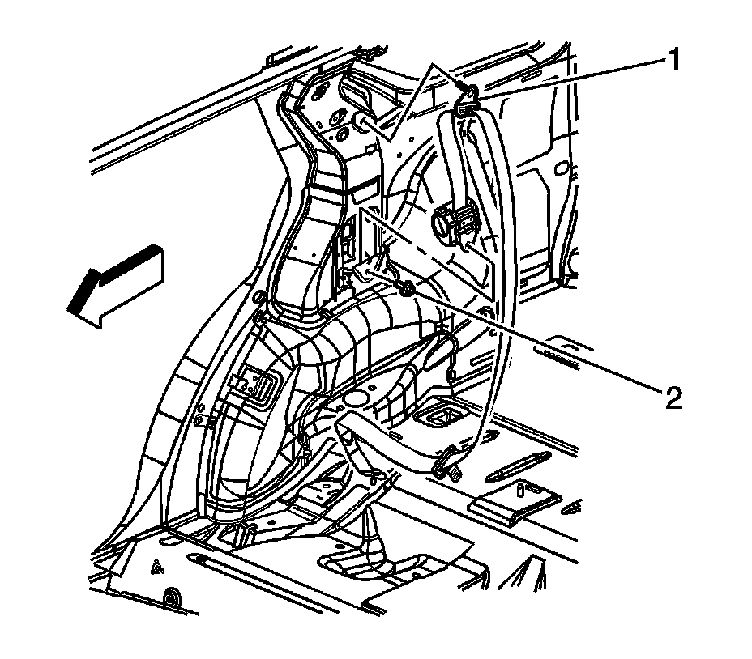

Seat Belt Retractor Replacement - No. 1 Rear
Seat Belt Retractor Replacement - No. 1 Rear
Removal Procedure
1. Remove the side door opening frame garnish molding. Refer to Side Door Opening Frame Garnish Molding Replacement (Service and Repair) .
2. Remove the body side rear trim panel. Refer to Body Side Rear Trim Panel Replacement (w/TB5) (Service and Repair)Body Side Rear Trim Panel Replacement (w/o TB5) (Service and Repair) .

3. Remove the rear seat belt upper guide shoulder bolt (1).
4. Remove the bolt that retains the seat belt retractor assembly (2) to the body.
Important: The rear seat does not need to be removed to access the right side anchor bolt.
5. Remove the rear seat in order to remove the left side anchor bolt. Refer to Rear Seat Replacement (Rear Seat Replacement) .
6. Remove the rear seat belt lower anchor bolt.
7. Remove the seat belt retractor assembly from the vehicle.
Installation Procedure
Notice: Refer to Fastener Notice (Fastener Notice) .
1. Install the seat belt retractor assembly (2) to the vehicle.
Tighten the rear seat belt retractor bolts to 70 N.m (52 lb ft).
2. Install the body side rear trim panel. Refer to Body Side Rear Trim Panel Replacement (w/TB5) (Service and Repair)Body Side Rear Trim Panel Replacement (w/o TB5) (Service and Repair) .
3. Insert the seat belt through the side door opening garnish trim.
4. Install the rear seat belt upper guide with the bolt. Ensure that the seat belt webbing is not twisted.
Tighten the bolt to 70 N.m (52 lb ft).
5. Install the side door opening frame garnish molding. Refer to Side Door Opening Frame Garnish Molding Replacement (Service and Repair) .
6. Install the rear seat. Refer to Rear Seat Replacement (Rear Seat Replacement) .
7. Install the rear seat belt lower anchor bolt. Ensure that the seat belt webbing is not twisted.
Tighten the rear seat belt anchor bolt to 45 N.m (33 lb ft).